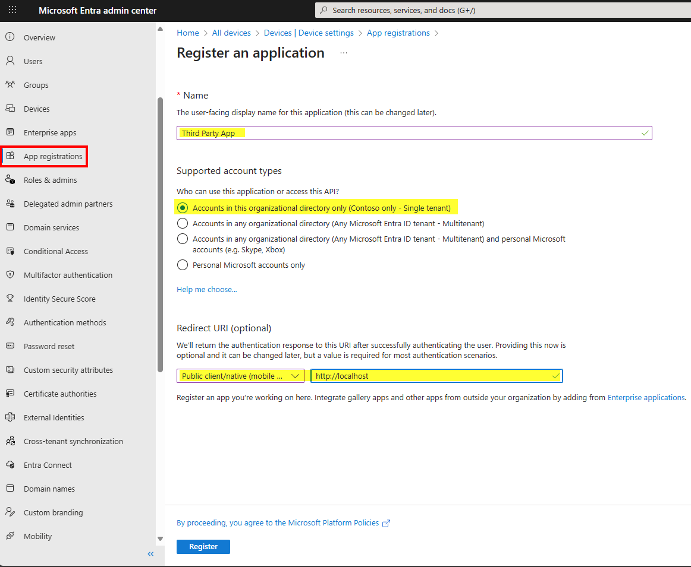
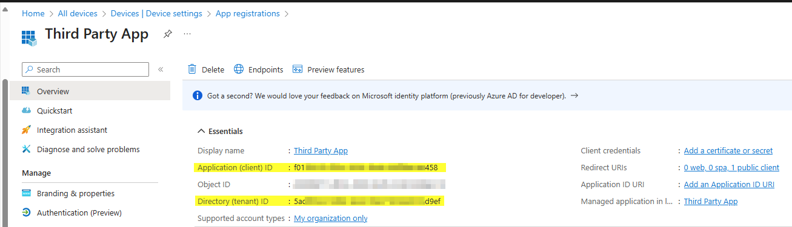
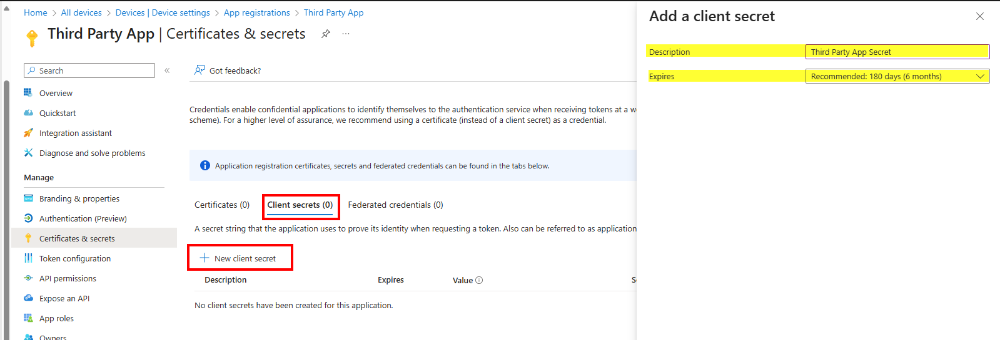
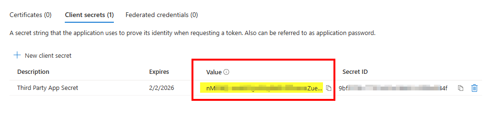
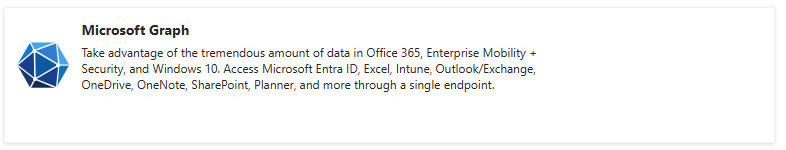
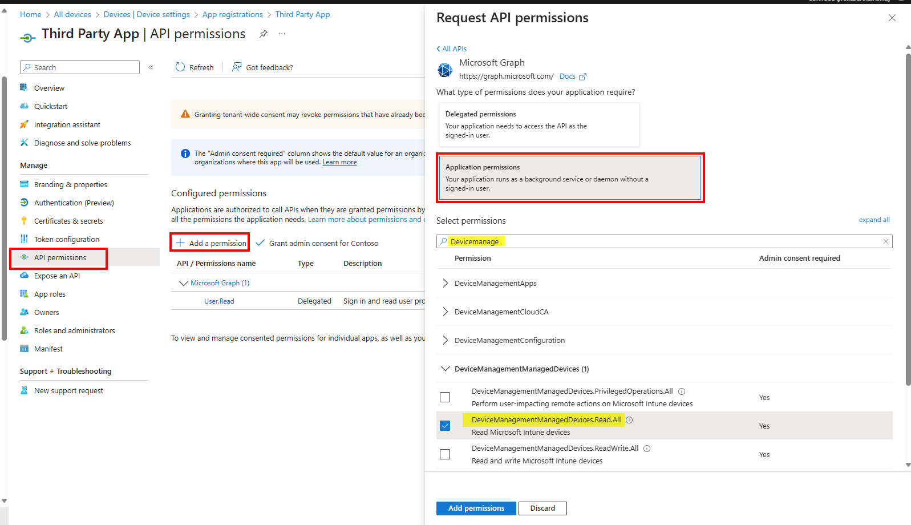
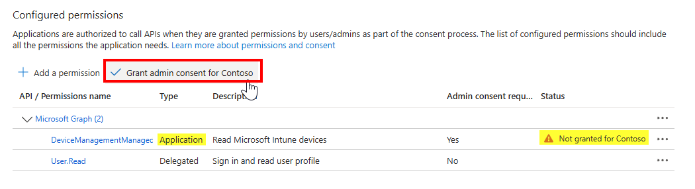

Use this guide to create an Entra app registration and collect the values that the simulator needs for app-only authentication.
Open Microsoft Entra admin center and go to App registrations. Click New registration, choose a name, and complete the registration form before selecting Register.

After the app is created, the overview page shows the Application (client) ID and the Directory (tenant) ID. Save both values because they will be used later in the simulator.

Open Certificates & secrets for the app, select Client secrets, and click New client secret. Give the secret a name and choose an expiration period, then click Add.

The value shown in the secret row is the only time it is fully displayed. Copy it immediately and store it somewhere safe because it will be hidden after you leave the page.

Open the API permissions tab, click Add a permission, choose Microsoft Graph, choose Application permissions, then select the application permissions your scenario requires and click Add permissions.


After the permissions are added, select Grant admin consent and confirm the prompt. Make sure the permission type is set to Application for this client-credential flow.

To test the flow in the Third-Party Graph Simulator, you will need: